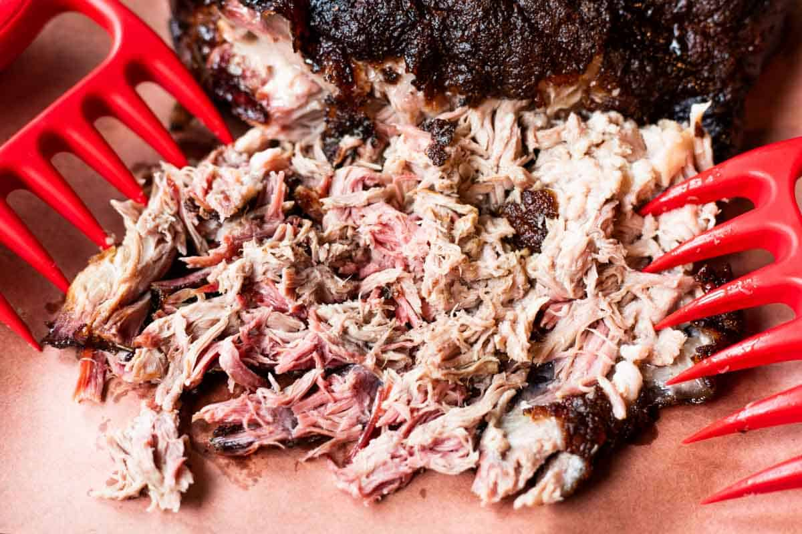

Bubba’s Smoked Pulled Pork

Description
This is going to take a while -- four to five hours to do it right. It's a waiting game while keeping temperatures relatively low, with indirect grilling and adding a little smokey flavor. You are going to need a charcoal-fired grill (we usually use a hamburger-shaped grill) or a smoker, plenty of charcoal, and wood chips soaking in water for smoke (beer for the chef). We also always use a dry rub, but it is not required.
Ingredients
- 1 pork shoulder (Boston butt, 3.5 to 5 pounds)
- 1/2 cup brown sugar
- 1/2 tsp mustard powder
- 1/2 tsp black pepper
- 1 Tbsp paprika
- 1 tsp salt
Steps
- Mix the above ingredients and use them to coat the cut of pork.
- Place the pork in the fridge for a few hours or overnight.
- Use a disposable aluminum drip pan in the center of the grill and place a handful or two of charcoal briquettes on each side of the pan.
- To get the grille started, use tongs to drop three or four red-hot charcoal briquettes on the briquettes on the four sides of the pan.
- Place the meat over the drip pan and use the bottom and top vents to regulate the temperature.
- You want an internal temp of 325-350 degrees.
- Every hour or so, you may need to add a few briquettes to each side of the pan.
- You can also add a few soaked wood chips, like apple or cherry wood.
- Once the center of the meat has reached an internal temperature of 195 degrees and the meat feels like it will fall apart, it is ready.
- Depending on how hot your grill has been and how large of a pork shoulder you are cooking, this can take 3-6 hours.
- Pull the meat off the heat carefully and place it in a large non-reactive cake pan.
- Cover with aluminum foil and wait an hour for it to cool off.
- When the meat is cool enough to touch, using clean hands, and a fork or two, pull the meat apart, drenching with the mop sauce as you go.